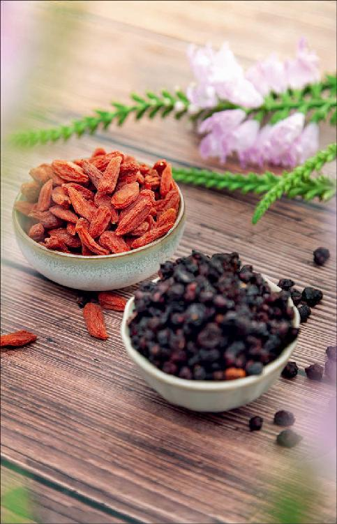

老话经常说“春困秋乏”，又说“伤春悲秋”。这些其实都不是正常的现象，而是我们身体发出的亚健康信号。
春困和秋乏是不一样的，“困”是想睡觉，而“乏”是浑身无力。
发生的时间也不一样，“困”一般是在午后困，一到下午人就想睡觉；“乏”一般是在清晨，早上不太想起床，也不是说睡不醒，而是醒了以后有点迷迷糊糊的，总觉得睡不够，浑身有点无力。
有两个造成秋乏的原因。
第一个原因，到了秋天，晚上的时间就越来越长了。白居易在诗里写道：“西风飘一叶，庭前飒已凉。风池明月水，衰莲白露房。其奈江南夜，绵绵自此长。”当我们还按夏天的作息来生活，到了秋天，夏天的作息还没调过来，晚上睡得晚，早上醒来就会乏。
第二个原因，是最主要的。夏天人体的血液都在体表，而到了秋天，天气一凉，气温骤然下降，毛孔就收缩了，血就往体内回流，进入了五脏六腑，这时候我们就会觉得乏。这种乏实际上是四肢无力的一个表现，因为四肢上的血液缺少了，人就会觉得没力气，自然就会懒洋洋的。
其实秋乏是夏天的虚带来的一个后遗症。
当人虚了以后，就会觉得气虚无力。如果在夏天补气没有补好，到了秋天，秋乏会更明显。
秋天的时候，重点还是要做补气的工作，但又跟夏天的补气有点不一样，因为这时候的重点是补肺气。
除了秋乏，在秋天身体容易出现的第二个现象就是悲秋。
“伤春悲秋”这句话我们经常用，但伤春和悲秋是不一样的。
春天的忧郁主要跟肝有关系，而秋天的悲思主要跟肺有关系。
我们可能会认为“伤春悲秋”只是一个心理上的问题，其实不然。因为心理的问题往往是跟身体密切相关的，很多朋友的心理问题也都是由身体问题造成的。
我曾经遇见过一个女孩，她那时候还在读高中，她的父亲说她身体太瘦吸收不好，可能是脾胃功能不调，希望我能给她看一看。那女孩就告诉我，她说她不觉得她的身体有什么问题，但她总有一个情绪就是“伤春悲秋”。
其实，这是她肺气不足的原因，而肺气不足又跟她的脾胃功能失调很有关系。经过调整，这些症状都是可以避免的。
如果您觉得自己常常也会“伤春悲秋”的，但可能没那么严重，只是到了秋天就觉得好像看什么都很消极，情绪比较消沉，不是很积极地想去做事情，这就是悲秋。
实际上，悲秋也是一种秋乏，这种秋乏是思想上的疲乏，我们同样可以通过补肺气来调理它。
初秋的时候，补气可以用黄芪，那时候还在三伏期间，补气还可以贴秋膘；而到了仲秋的时候，想补气那重点就要补肺气了。
这时候的补就跟三伏（夏天）的补不一样了。我们要用到五味子、枸杞、莲子、银耳等一些平补肺气的食物。
如果您是一个肺气比较虚的朋友，这时候的秋乏还带有一种特殊的现象，这种现象在交白露节气的那段时间特别明显。
什么现象呢？就是在早上四五点的时候会早醒。同时，又觉得四肢懒洋洋的，不太想起床，可是想睡又不太能睡得着。这种现象就表示肺气虚得比较明显了。

当人肺气太虚的时候，早上容易在肺经当令的时候醒过来，而由于秋乏的现象比较明显，四肢无力懒洋洋的，又不想起床，这种时候其实是不太舒服的。
这样的朋友一定要记住，在仲秋、深秋，乃至冬天的时候，都要多吃补肺气的食物。
一说到补肺气，很多人可能认为这是中老年人才要做的事情，但是我前面举的例子里，那个女孩当时只是一个高中生。
一个人只要是劳累过度，或者忧思过度，或者是被风寒所伤，都有可能伤到肺气，从而引起秋乏或者悲秋。
无论年龄大小，如果您被以上三种因素伤害到身体，都要注意在秋天多多去吃补肺气的食物。尤其是家长朋友要注意，因为现在的孩子学习是非常劳累的，而且压力很大，心理上的压力都会影响到孩子们的肺气，使肺气不足，而肺气不足又会让孩子们更容易患呼吸道一类的疾病，经常感冒、咳嗽，所以家长在仲秋时要特别注意给孩子们养肺、补气。